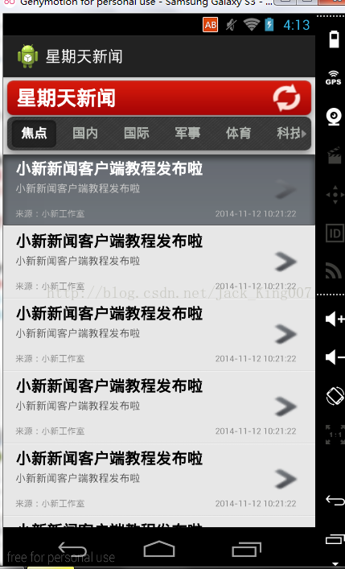

高仿新闻教程新闻Item的布局复习（3）
以前总是想去追求UI的美化，最后才知道最重要的是功能实现，但是UI的样式美化还是要需要掌握，能让你少写很多代码。
这一节主要是讲listview里面的item加入并且自己加入假数据
界面

因为是布局 我主要讲解样式美化
最外层是一个相对布局
<RelativeLayout xmlns:android="http://schemas.android.com/apk/res/android" android:id="@+id/newslist_item_layout" android:layout_width="fill_parent" android:layout_height="82.0dip" android:background="@drawable/newslist_item_selector" android:descendantFocusability="blocksDescendants" android:marqueeRepeatLimit="marquee_forever">
1.高度因为是条目 我们就自己定了一个高度，如果不喜欢可以自己更改
2.background 调用了一个selector属性
<?xml version="1.0" encoding="utf-8"?>
<selector
xmlns:android="http://schemas.android.com/apk/res/android">
<item
android:state_pressed="false"
android:drawable="@drawable/newslist_item_background" />
<item
android:state_pressed="true"
android:drawable="@drawable/list_selected_background" />
<item
android:state_focused="true"
android:drawable="@drawable/list_selected_background" />
<item
android:drawable="@drawable/newslist_item_background" />
</selector>
同时里面还有color里面还有 newslist_item_background
<pre name="code" class="html"><?xml version="1.0" encoding="UTF-8"?>
<resources>
<item type="drawable" name="main_background">#ffe7e7e7</item>
<item type="drawable" name="white">#ffffffff</item>
<item type="drawable" name="newslist_item_background">#FFE7E7E7</item>
<item type="drawable" name="news_list_item_background">#ffe7e7e7</item>
</resources>这就是实现了点击 条目变色的高级效果
3.android:descendantFocusability="blocksDescendants" ViewGroup阻止其子View接收焦点
4.marqueeRepeatLimit 主要走马灯效果 现在展现不出来
全部布局
<?xml version="1.0" encoding="utf-8"?> <!-- 1.android:descendantFocusability：ViewGroup阻止其子View接收焦点 --> <RelativeLayout xmlns:android="http://schemas.android.com/apk/res/android" android:id="@+id/newslist_item_layout" android:layout_width="fill_parent" android:layout_height="82.0dip" android:background="@drawable/newslist_item_selector" android:descendantFocusability="blocksDescendants" android:marqueeRepeatLimit="marquee_forever"> <RelativeLayout android:id="@+id/newslist_item_info_layout" android:layout_width="fill_parent" android:layout_height="82.0dip" android:layout_marginRight="20.0dip"> <TextView android:id="@+id/newslist_item_title" android:layout_width="wrap_content" android:layout_height="wrap_content" android:layout_marginLeft="14.0dip" android:layout_marginTop="4.0dip" android:layout_marginRight="10.0dip" android:layout_alignParentLeft="true" android:textSize="18.0dip" android:textStyle="bold" android:textColor="@color/newslist_item_title_selector" android:text="我是title " android:singleLine="true" android:marqueeRepeatLimit="marquee_forever" /> <TextView android:id="@+id/newslist_item_digest" android:layout_width="fill_parent" android:layout_height="wrap_content" android:layout_below="@id/newslist_item_title" android:layout_marginLeft="14.0dip" android:layout_marginTop="2.0dip" android:layout_marginRight="10.0dip" android:textSize="12.0dip" android:textColor="@color/newslist_item_digest_selector" android:ellipsize="end" android:text="摘要..." android:lines="2" android:marqueeRepeatLimit="marquee_forever" /> <TextView android:id="@+id/newslist_item_source" android:layout_width="wrap_content" android:layout_height="wrap_content" android:layout_alignParentLeft="true" android:layout_below="@id/newslist_item_digest" android:layout_marginLeft="14.0dip" android:layout_marginRight="10.0dip" android:layout_marginBottom="4.0dip" android:textSize="10.0dip" android:textColor="@color/newslist_item_source_selector" android:text="来源：" android:marqueeRepeatLimit="marquee_forever" /> <TextView android:id="@+id/newslist_item_ptime" android:layout_width="wrap_content" android:layout_height="wrap_content" android:layout_alignBottom="@id/newslist_item_source" android:layout_marginRight="2.0dip" android:layout_alignParentRight="true" android:textSize="10.0dip" android:textColor="@color/newslist_item_source_selector" android:text="5分钟前" android:singleLine="true" android:marqueeRepeatLimit="marquee_forever" /> </RelativeLayout> <Button android:id="@+id/newslist_item_go_detail" android:layout_width="wrap_content" android:layout_height="wrap_content" android:background="@drawable/newslist_item_go_detail_selector" android:layout_marginRight="2.0dip" android:layout_toLeftOf="@id/newslist_item_info_layout" android:layout_alignParentRight="true" android:layout_centerVertical="true" /> </RelativeLayout>后面布局 相信大家举一方三 都看得懂的
然后我们在添加代码 将数据填充进去
一个listview 为了方便，我们选择了simpleadapter 。
我还是负责点 说下 simpleadapter吧 他是一个适配器，第一个参数是当前填充的activity 第二个参数是 一个map集合你需要填充的数据 就有了 这一段代码的出现
List<HashMap<String, String>> newsData=new ArrayList<HashMap<String,String>>();
//加载10条假数据
for(int i=0;i<10;i++){
HashMap<String, String> hashMap = new HashMap<String, String>();
hashMap.put("newslist_item_title","小新新闻客户端教程发布啦" );
hashMap.put("newslist_item_digest","小新新闻客户端教程发布啦" );
hashMap.put("newslist_item_source", "来源：小新工作室");
hashMap.put("newslist_item_ptime", "2014-11-12 10:21:22");
newsData.add(hashMap);
}第三个也就一个数组 其中放了你要填充的数据 和第四个是有关系 第四个参数也是一个数组 想对应你要填充到那个组件里面去
//显示新闻列表
List<HashMap<String, String>> newsData=new ArrayList<HashMap<String,String>>();
//加载10条假数据
for(int i=0;i<10;i++){
HashMap<String, String> hashMap = new HashMap<String, String>();
hashMap.put("newslist_item_title","小新新闻客户端教程发布啦" );
hashMap.put("newslist_item_digest","小新新闻客户端教程发布啦" );
hashMap.put("newslist_item_source", "来源：小新工作室");
hashMap.put("newslist_item_ptime", "2014-11-12 10:21:22");
newsData.add(hashMap);
}
SimpleAdapter newsListAdapter = new SimpleAdapter(this, newsData, R.layout.newslist_item,
new String[]{"newslist_item_title","newslist_item_digest","newslist_item_source","newslist_item_ptime"},
new int[]{R.id.newslist_item_title,R.id.newslist_item_digest,R.id.newslist_item_source,R.id.newslist_item_ptime});
ListView newslist = (ListView)findViewById(R.id.newslist);
newslist.setAdapter(newsListAdapter);End